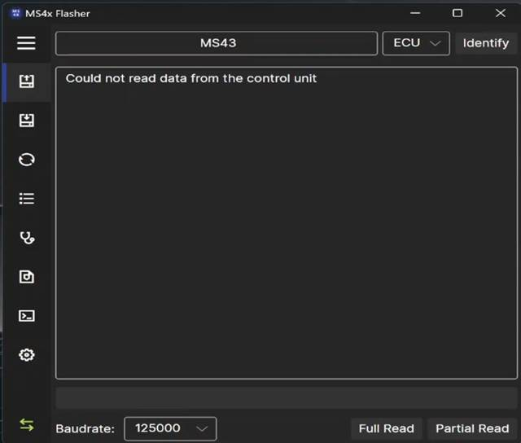
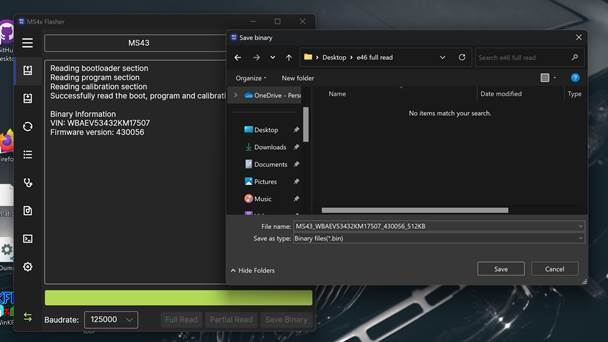
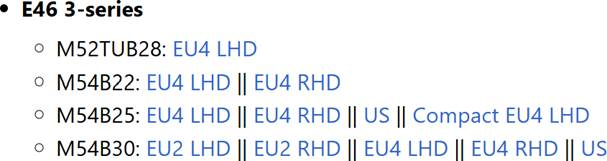
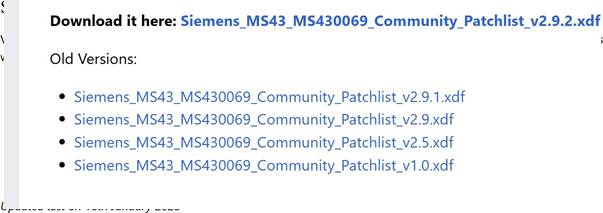
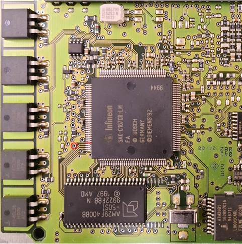
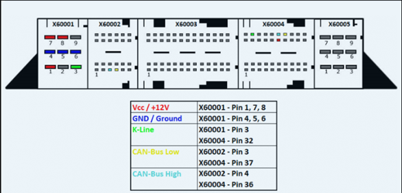
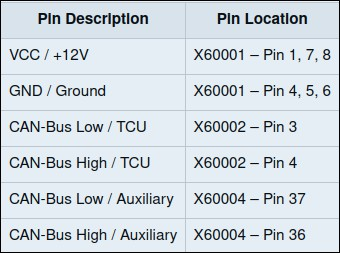

Frankie Deleon
IS-4543-ON1
Idea #2:
Recode BMW car data to enable/disable different features. It can also expand
further to create an environment for engine tuning.
Milestone #3: Extract and Modify ECU data using Ms4x Flasher.
Milestone 3: Acquiring ECU data
Tuning a BMW ECU is an exciting and daunting task that requires
the right tools
and knowledge to follow the
correct steps to safely access and modify the engine’s control data. In this
guide, we’ll explore how to use two reliable tools: MS4X Flasher for full and
partial reads, which is ideal for
partial reads through the OBD port, enabling quick access to specific
calibration data. With MS4X, you can perform necessary tweaks without engaging
in full ECU access, making it convenient for simpler
updates and re-calibrations. This method allows for program
adjustments while preserving the bootloader section, ensuring that the
ECU’s core structure remains intact. For more advanced tasks, the JM Garage
software provides complete ECU access by enabling “boot mode.” This method requires grounding pin 104 on
the ECU’s C167 processor, bypassing flash protections to enable full reads and
writes. Boot mode is essential when you need unrestricted access,
such as for cloning, deep parameter adjustments, or VIN and security code updates. This approach ensures you have a comprehensive backup of the
ECU’s entire 512KB flash memory, covering
all program, calibration, and boot-loader data.
Whether you’re looking
to fine-tune specific parameters or fully customize your BMW E46’s ECU,
these tools offer a versatile pathway to unlock its potential safely. This
guide will help you understand the steps and precautions needed to make precise
modifications to your ECU setup.
Description of Learning Completed:
To begin the tuning process we first must acquire a full read of our ECU data to create a backup file in case any problems occur
while tuning or preforming a firmware update.
Items needed:
OBD2 cable
Laptop using
Win OS Ms4x Flasher installed JMGarage installed
Definition and patch-list files Battery Charger (optional)
Ground wire for
boot mode pin. (Random copper wire)
Once the vehicle is in ignition
2 position and OBD2 is plugged into the laptop
we are ready to start.
If you are doing
it in the car, connect
a battery charger
to ensure vehicle
stays above 12V. Connect OBD cable to car and computer then turn ignition
to position 2. If you are using a
bench setup, turn on power supply.
Open MS4x flasher
In previous
guides, Ms4x flasher
has been used to do full reads.
Considering the state of your
vehicles ECU and your flashing hardware, you might receive "Error
"Could not read the data from the control unit"
This issue could be caused by operating system configuration. Users have reported windows 11 may cause
communication issues with during full reads or the current ECU being read is
corrupted needing a boot mode read.
Another possibility is that some ECUs are read locked
for DS2 reading,
which is the protocol used by MS4x Flasher to
communicate with the ECU.
For this example, using Ms4x flasher
on windows 11 , initially
it would not allow a full
read. I would receive the error shown below

During this stage
my initial thought
was that the DME
was DS2 locked,
which can be added to the ECU's read block to deny
any reads on the ECU.
Through many troubleshooting attempts, the issue
was found to be the K-DCAN cable being set to the wrong pins due to the usage
of the cable with multiple
BMW models.
The
switch
on
the
K-DCAN
cable
will
bridge
and
de-bridge
the
connections
between pins 7 and 8.
Pin 7 (k-line)
is used to communicate with older BMWs,
while pin 8 normally left unconnected can be bridged with pin
7 allowing backward compatibility.
Make sure MS4x
Flasher identifies ECU as MS43 by clicking "Identify"
Hit “full read” or "Partial
Read" for tuning using correct firmware and wait for it read.
If Ms4x is successful, hit “save binary”
Save this binary in a safe place as a backup.

For maximum
tuning capabilities it is recommended to update the vehicles firmware
to the most recent version,
which is: MS430069, for the BMW e46 M54B30. Note the current firmware is
version 0056, as shown in the firmware version section after the Full Read.
- This
firmware update is necessary to unlock new features and bug fixes.
Also improves stability and
performance along with compatibility with Tuning tools.
- It
is important you select the correct .bin file corresponding to your vehicles
engine specifications.
-
When selecting definition files for tuning software
such as tuner
pro, you will only see that
only 0069 patch-list files (latest update) are being presented. This means you
must be up with firmware updates to date to allow communication with TunerPro
or other logging and tuning software.

Download links
for e46 firmware update:
https://www.ms4x.net/index.php?title=Firmware_Files
https://www.ms4x.net/index.php? title=File:Siemens_MS43_MS430069_E46_M54B30_US.bin
Once new firmware is downloaded, in Ms4x flasher
go to the next tab down in the flasher and hit “load binary”
For this example,
I will not load the binary into the vehicle
at this time for a firmware
update.
For best practices I will use JMgarage to acquire
a true full flash 512kb bin file, through boot-mode, which
extracts all ECU information. including VIN and ISN and
save a full backup of the ECU's data. This
process can be seen in the next section.
Note that upgrading and downgrading software
via boot-mode is not recommended due to overwriting the ISN
which will desync the EWS from the ECU, EWS can be resynced using INPA or Ms4x flasher. This is being done to
secure a complete 1:1 clone of your ECU data in case any errors occur in the
future, your ECU can be cloned to its original state.
Another keynote is to avoid flashing full
readouts made with OBD programs in boot mode such as MS4x flasher, this is
because the program routines in the ECU blocks where ECU unique keys are contained, flashing in boot mode will permanently delete these keys and can only be restored
if you have a full boot-mode backup.
Once you are ready to update your firmware, Select
BIN file for the 069 firmware that you downloaded from MS4x.net and hit
open
Hit full write then wait for it write.
Once file has been written go back up to the first tab in the flasher and do another
full read of the updated firmware on your vehicle.
Once the full
read is done, hit save binary.
It would be wise to save a copy of your untuned firmware update
for safekeeping.
 At this stage
remove key from ignition for 10 seconds
after the flash
and make sure the vehicle starts up like normal.
At this stage
remove key from ignition for 10 seconds
after the flash
and make sure the vehicle starts up like normal.
To begin tuning, we will be using a partial read of our ECU data.
Go to Ms4x flasher again
and do a partial read of your updated firmware. This
will allow us to only tune the parameters we need.
Tuner Pro requires
two XDF files to be able to operate, the definition file, and a patch-list
file. Both are available on ms4x.net, if needed download
the correct files
as shown below
and continue.

https://www.ms4x.net/index.php?title=TunerPro_MS43_Community_Patchlist https://www.ms4x.net/index.php?title=Definition_Files
Once all files
are downloaded corresponding to your ECU, Open tuner pro.
Hit XDF tab
Go down and hit Select XDF
Select Siemens_MS43_430069_512k.xdf that you downloaded from MS4x.net
definition files
Once that is loaded, hit XDF tab again
Hit
Select XDF
Select your 069-community
patch list you downloaded from MS4x.net Once
those two XDF’s are in there, select File tab
Hit Open Bin
Open your newest partial read Bin file that you saved after the
firmware update
The reason for using the partial read,
is because a full read will include
sensitive data unrelated to
our tuning interest.
You now have full access to tuning your BMW's ECU parameters, which will be covered in the next milestone.
JMgarage boot-mode method
To secure
a full backup file the ECU must be read using boot-mode, JMgarage was specifically created to work in boot mode
and allow full reads and flashes. To enter boot-mode on Ms43 ECU's, pin 104
needs to be shorted to allow the ECU to enter boot-mode allowing full
unrestricted access to the ECU's memory. As a
pin on the C167 processor
needs to be grounded
when powering up the ECU it is best to perform these steps with a bench setup,
but it can be performed in the car as well, but extra care must be taken so
that nothing is accidentally shorted. To prevent connection issues, verify in
the device manager on the computer that the OBD cables com port is configured
with a latency timer of 16 milliseconds.
To begin the process
of entering boot mode:
Turn off ignition and open the ECU compartment under the hood.
Disconnect all connectors to
the ECU and remove the ECU from the compartment.
Remove the
protective covers on the ECU by undoing the four bolts.
Place the ECU circuit
board on an ESD safe surface on a
bench or near ECU connections in the car. For this example, we do not have a current bench
setup.
Connect the
computer to the OBD plug in the car. Start JMGarage boot mode programming software.
Short pin 104
on the C167 processor to ground with a piece of wire or something similar
on the pin shown in the
screenshot below.

Power up the
ECU and keep shorting pin 104 for approximately 10 seconds. If you are working in the car you can power up the ECU by turning
the ignition key to position
2 and then connecting the
X60001 connector which powers the Vcc/+12V, Ground, and CAN- Bus low/ TCU
K-line functions as shown in the screenshots below.


After 10 seconds have passed remove
the short wire from pin 104 (do not leave
it connected as that will result in a corrupted read/write)
Try connecting with the boot mode programming software. If the connection fails, power down the
ECU and redo steps by cycling the power and shorting pin 104 for 10 seconds,
then connecting with boot-mode.
After the connection
is successful you can fully read and write to the ECU.
Note that during
the read/write process JMGarage can sometimes state that it's not responding. If this happens
do not panic the program
is still working
in the background so just wait until it finishes.
In the event of something still
going wrong during
the read/write process
like a laptop shutting down
then power down the ECU and redo step to short pin 104 and load JMgarage.
It is recommended
to always start with performing a full read of the ECU so that you have a
backup that can be restored
if anything goes wrong. Also remember to correct checksums on all binaries you
write to the ECU which can be done using ms4x flasher checksum validator if you
plan on writing using boot-mode.
Once all is this
process is complete, while it can be a confusing and intimidating process, you
will now have full access to Tune your BMW to your preference, unlocking new
levels of performance, customization, and adaptability. This guide has walked
you through the steps of using MS4X Flasher for partial reads and essential
firmware updates if full reads are allowed, as well as JM Garage for complete
access to the ECU in boot mode. By following these instructions carefully,
you’ll have the flexibility to apply performance patches, resolve immobilizer
issues, and ensure compatibility with the latest firmware like MS430069 to
modify your engine. It is important when performing any ECU tuning to always
back up your original ECU data by performing a full read before making changes.
With your original binary file safely stored, you’ll have a fail-safe to
restore the ECU if any issues arise. Also,
maintaining stable power during read/write processes and ensuring that all
connections are secure is critical to prevent data corruption or errors.
Whether you’re aiming for basic re-calibrations or full customization of ECU data,
MS4X Flasher and JM Garage
provide a versatile toolkit to achieve